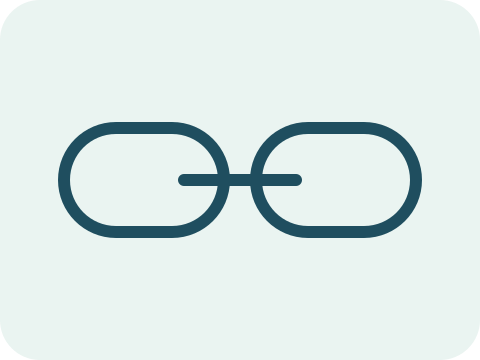

Max WeberHigh priority
Weber explains how modern societies are ruled: by meaning-seeking individuals under rational-legal authority and bureaucracy. Every answer needs the strengths and the iron-cage warning.
Chapter map#
- Weber
Social action
- Affective
- Traditional
- Instrumental
- Value rational
Verstehen
- Direct
- Explanatory
- Limitations
Ideal type
- Mental model
- Comparison
Authority
- Traditional
- Charismatic
- Rational-legal
Rationalization
- Calculation
- Efficiency
Bureaucracy
- 8 features
- Iron cage
Criticisms
- Goal displacement
- Trained incapacity
- Eurocentric
Exam lens#
The story first#
In simple words#
- Weber studies social action: action that is meaningful and aimed at others; four types (affective, traditional, zweckrational, wertrational).
- Verstehen (interpretive understanding) and ideal types (mental models) are his tools; he also stresses causal pluralism.
- Authority is legitimate power: traditional, charismatic, rational-legal.
- Bureaucracy is the highest form of rational-legal authority with eight features; it can become an iron cage.
| Term | In plain words |
|---|---|
| Social action | Action that is meaningful to the actor and oriented to the behaviour of others. |
| Verstehen | German: to understand; interpretive understanding of meaning and motive. |
| Ideal type | A mental model that simplifies reality for analysis and comparison. |
| Causal pluralism | Social events have many causes, not one. |
| Authority | Legitimate power, obeyed voluntarily. |
| Charisma | Greek: gift of grace; exceptional personal qualities. |
| Routinization of charisma | Weber's term for charismatic authority turning into rule-based forms. |
| Rationalization | Growing dependence on calculation, logic and efficiency instead of custom or emotion. |
| Bureaucracy | Administrative machinery of the modern state; bureau (desk) + cracy (rule). |
| Iron cage | Weber's warning that bureaucratic rationality can trap people. |
| Goal displacement | Following rules becomes more important than the organisation's purpose. |
| Trained incapacity | Over-reliance on fixed rules reduces ability to handle new situations. |
1 · Max Weber#

- Max Weber (1864–1920) was a German sociologist, economist, and political thinker.
- Along with Karl Marx and Emile Durkheim, he is regarded as one of the founding fathers of modern sociology.
- He was originally trained in law and economics.
- Weber made important contributions to the study of social action, authority, bureaucracy, and religion.
- He established sociology as an interpretive discipline that seeks to understand the meanings people attach to their actions.
- His comparative and historical study of capitalism, power, and modern society has had a lasting influence on sociology, political science, and public administration.
- Max Weber (above) is one of the key architects of modern sociology.
- Social Action For Max Weber,social action is the basic unit of analysis in sociology.
- InEconomy and Society (1922), Weber defines sociology as "a science which attempts the interpretive understanding of social action in order to arrive at a causal explanation of its course and effects." According to Weber, social action is any human action that is meaningful to the individual and directed towards other people.
- He writes, "Action is social insofar as its subjective meaning takes account of the behaviour of others and is thereby oriented in its course." Weber classified social action into four ideal types.
- 1. Affective Social Action This type of action is guided mainly by emotions and feelings rather than by rational thinking.
- A person acts because of emotions such as anger, love, fear, happiness, or grief.
- For example, a mother slapping her child in a moment of anger is acting emotionally without thinking about the consequences.
- 2. Traditional Social Action Traditional social action is guided by customs, habits, and long-established traditions.
- People perform such actions because they have always been done in that way, rather than because they have carefully thought about them.
- Examples include performing traditional religious rituals or following customs passed down from previous generations.
- 3. Zweckrational Social Action (Instrumentally Rational Action) In this type of action, both the goal and the means are chosen rationally.
- The individual first decides the objective and then selects the most efficient and effective way to achieve it after considering the costs, benefits, and possible consequences.
- For example, a businessperson investing money to maximize profits is engaging in zweckrational action.
- 4. Wertrational Social Action (Value Rational Action) Wertrational action is guided by a conscious commitment to ethical, religious, or moral values.
- The person acts because of the actor’s commitment to those values, even if the goal does not bring personal benefit or may even involve sacrifice.
- For example, sacrificing one's life for one's country or for a religious belief is value-oriented rational action.
- The means are chosen rationally, but the action is guided by commitment to values rather than personal gain.
- Through the concept of social action, Weber shifted sociology's focus from social structures alone to the meanings that individuals attach to their actions.
- His fourfold classification provides a useful framework for understanding different kinds of human behaviour.
- Studying Social Action To study social action, Weber suggested to use three main ways -Verstehen,Ideal Types, and causal pluralism.
- Verstehen helps us understand the meaning behind people's actions.
- Ideal Types help us compare and analyse social reality.
- Causal pluralism means that social events usually happen because of many causes, not just one.
- For example, capitalism did not develop only because of economic reasons.
- Religion, ideas, politics, and history also played an important role.
- Verstehen (Interpretive Understanding) One of Weber's most important contributions to sociology is the method of Verstehen.
- Verstehen is a German word meaning “to understand”.
- Weber believed that sociology should not only observe what people do but also understand the meanings and motives behind their actions.
- According to him, human behaviour is different from natural events because people act with intentions and attach meanings to their actions.
- Therefore, to explain society, sociologists must understand these subjective meanings.
- To capture meanings behind people’s actions, Weber argued that simply observing what people do is not enough.
- A sociologist must ask why people behave in a particular way and what meaning that behaviour has for them.
- Sociologist must understand the social actor’s intentions and not just the action.
- Only then can social action be properly explained.
- Weber said,"Verstehen is the understanding of the meaning of action from the point of view of the acting individual ." It means understanding an action from the actor's own point of view.
- Unlike positivist methods, which focus mainly on observable behaviour, Verstehen goes further and helps sociologists to understand the motives, intentions, values, and meanings behind human actions.
- Forms of Verstehen Weber identified two main forms of interpretive understanding.
- 1. Direct Observational Understanding (Aktuelles Verstehen) This refers to understanding an action by directly observing it.
- The researcher tries to understand what the social actor is doing and how the action is being performed, without delving deeply into underlying motives.
- For example, observing a student raise his hand in a classroom and understanding it to mean that he is seeking teacher’s permission to speak.
- 2. Explanatory Understanding (Erklarendes Verstehen) This is a deeper form of understanding.
- The researcher tries to understand an action from the actor's point of view by putting himself in the actor's place.
- This helps the sociologist to understand the reasons, motives, intentions, and values behind the person's action.
- For example, when a student raises his hand in class, the next step is to understand why the student raised his hand.
- What possibly motivated him? He may want to clear a doubt, or answer the teacher's question, or seek permission to leave the classroom, or draw his classmates’ attention.
- Understanding the reason or motive behind the action is Erklarendes Verstehen.
- Weber famously said that "one need not be Caesar in order to understand Caesar." This means that a sociologist does not have to share the same background as the person being studied.
- By carefully interpreting people's actions and trying to see things from their point of view, the sociologist can understand the meanings behind their actions, even if they belong to a different society, culture, or historical period.
- Role of Verstehen in Sociology Verstehen distinguishes sociology from the natural sciences.
- Natural sciences explain events through cause-and-effect relationships, whereas sociology studies meaningful social action.
- Weber argued that social reality cannot be fully understood without interpreting the meanings that individuals attach to their behaviour.
- At the same time, Weber did not reject causal explanation.
- He believed that sociology should combine interpretive understanding with causal analysis.
- A sociologist should first understand the subjective meaning of an action and then explain how that action produces particular social outcomes.
- The method of Verstehen helps to address the debate between objectivity and subjectivity in sociology.
- Weber accepted that people's actions are guided by their own thoughts, motives, and meanings; which are subjective.
- But he argued that sociology can still study these meanings in a scientific and objective way.
- The sociologist first understands the meaning that people give to their actions and then explains those actions logically.
- In this way, the sociologist can give an objective explanation of subjective meanings.
- Also, Verstehen helps to improve objectivity because the sociologist does not judge an action from his own (the sociologist’s) point of view.
- Instead, he tries to understand it from the actor's point of view.
- This reduces the influence of the researcher's own values and biases.
- Verstehen thus helps sociology understand human experiences and social reality in a systematic and objective way.
- Limitations of Verstehen Although Verstehen is a valuable method, it has certain limitations.
- 1. The researcher may incorrectly understand or interpret the motives and meanings of social actors.
- 2. It may reduce objectivity and introduce personal bias into research.
- Different researchers may interpret the same action differently, leading to different conclusions.
- 3. Verstehen is more useful for small-scale qualitative studies and is difficult to apply to large populations.
- 4. Verstehen focuses mainly on the meanings and motives of individuals.
- Since these can differ from person to person, critics argue that it does not fully explain why many social institutions and social norms remain stable over long periods.
- Despite these limitations, Verstehen remains one of Weber's most important contributions.
- It shifted sociology from merely describing behaviour to understanding the meanings people attach to their actions.
- Even today, it forms the foundation of interpretive sociology and qualitative research.
2 · Ideal Type#

- The ideal type is one of the most important aspects of Max Weber's methodology.
- He developed it as a research tool to study society in a clear and systematic way.
- An ideal type is a mental model of a social phenomenon.
- It is a conceptual model created by the researcher by selecting and emphasizing only some key features of the phenomenon.
- It does not describe reality exactly as it is.
- Instead, it presents the most important characteristics of the phenomenon in a simplified form.
- Weber discussed the ideal type in many works such as The Methodology of the Social Sciences and Economy and Society.
- He explained it as: “An ideal type is formed by the one-sided accentuation of one or more points of view…” Although this definition is technical, the basic idea is simple.
- An ideal type is a model that helps us understand reality.
- It is not reality itself. An ideal type does not exist in its pure form in the real world.
- Real social life is always more complex.
- Therefore, an ideal type is like a caricature rather than a photograph.
- Just as a caricature highlights a few important features of a person's face, an ideal type highlights only the most important features of a social phenomenon.
- At the same time, ideal types are not imaginary ideas.
- They are based on careful observation and study of society.
- To construct an ideal type, the researcher studies real social life, selects the important features, and combines them into a clear and logical model.
- For Weber, an ideal type is an analytical tool.
- It is not a moral ideal or a perfect example.
- It helps sociologists compare different societies and institutions in a systematic manner.
- Characteristics of Ideal Types ● Ideal types are mental constructs.
- They are created by the researcher and do not exist in reality in their pure form.
- Ideal types are fictional. ● They highlight the essential features of a social phenomenon while ignoring less important details. ● They are analytical tools used to compare and understand real social situations. ● They are value-neutral.
- The word "ideal" does not mean good, desirable, or perfect.
- It simply refers to a conceptual model. Examples of Ideal Types Weber developed several ideal types in his sociological writings.
- Some important ideal types developed by Weber include bureaucracy, capitalism, the types of authority (traditional, charismatic, and rational-legal), and the types of social action.
- For example, Weber's model of bureaucracy describes the main features of a bureaucratic system.
- No real organisation completely fits this model, but the ideal type helps us compare actual bureaucracies and understand how closely they resemble it.
- Importance of Ideal Types Weber believed that social reality is very vast and complex.
- It is difficult to understand fully. Therefore, the sociologist constructs an ideal type to simplify reality.
- The purpose of making an ideal type is not to give a complete description of reality, but to make it easier for the sociologist to understand it.
- Since social reality is complex and varied, it is impossible to study everything at the same time.
- The ideal type also helps the researcher organise this complexity.
- It provides a clear template against which real cases can be compared.
- Ideal types help sociologists make comparison across different societies or historical periods.
- By comparing reality with the ideal type, the researcher can identify similarities, differences, and patterns in social life.
- Weber therefore regarded the ideal type as an essential analytical tool for objective sociological analysis.
- In short, the ideal type is a methodological tool that simplifies complex social reality.
- It helps sociologists classify, compare, and analyse social phenomena in a clear and systematic manner.
- Criticisms of Ideal Types ● Since ideal types are constructed by researchers, different sociologists may create different ideal types for the same phenomenon. ● Critics argue that selecting certain characteristics over others may distort the reality substantially, and introduce the researcher's personal bias. ● Critics argue that ideal types oversimplify social life by ignoring many historical and cultural variations.
- Despite these criticisms, the ideal type remains one of Weber's most influential methodological contributions.
- It enables sociologists to study complex social reality in a systematic and comparative way without claiming that the model itself exists in reality.
3 · Objectivity and Weberian methodology#
- Weber viewed Verstehen, ideal types, and causal pluralism as methodological tools that help researchers maintain scientific rigour and minimize personal bias.
- Weber argued that complete objectivity is difficult to achieve in social research because researchers themselves are members of society and possess values.
- The selection of a particular social phenomenon for research out of the innumerable possibilities is definitely affected by the researcher’s background, values, and preferences.
- In other words, selection of the topic of research is value relevant.
- However, he believed that sociologists must strive for objectivity through value neutrality.
- While values may influence the selection of a research topic, they should not influence the collection, analysis, and interpretation of data.
- The task of sociology is to explain social reality, not to make moral judgments about it.
4 · Authority#
- Authority is legitimate power. Power means the ability to make others obey one's will, even against their wishes.
- Authority is different than other forms of power because people obey it voluntarily.
- They accept the command as rightful and legitimate.
- Power, then, is a broader concept than authority.
- Power may be exercised in legitimate or illegitimate ways.
- When power is exercised illegitimately, it is coercion.
- When power is regarded as rightful, just, fair, and reasonable by those who are subject to it, it is known as authority.
- Thus, authority rests not merely on the ability to enforce obedience, but also on the belief in the legitimacy of the commands issued.
- Weber argued that every system of authority depends on the belief that those who rule have the right to rule.
- Based on the source of this legitimacy, in Economy and Society, Weber classified authority into three ideal types:
5 · 1. Traditional Authority#

- Traditional authority is based on long-established customs, traditions, and beliefs.
- People obey because "it has always been this way." The authority of rulers is inherited and tied to inherited status rather than rational rules, merit, or personal qualities.
- Examples include kings, hereditary rulers, tribal chiefs, and village elders.
- King Charles III of England holds the Sceptre and wears the Crown, symbols of royal
- Traditional authority structures typically involve a household of personal servants and a hierarchy of lords who owe allegiance to a monarch or the traditional ruler.
- The roles and obligations of these officials are defined largely by custom, though the ruler may modify them to a limited extent.
- Traditional authority is common in pre-modern societies.
- Administrative positions are often hereditary, and loyalty is to the person as well as the position.
6 · 2. Charismatic Authority#

- The word charisma comes from the Greek word meaning "gift of grace." Charismatic authority is based on the perceived supernatural or at least exceptional qualities of a leader.
- People obey because they believe the leader has extraordinary abilities, wisdom, courage, or spiritual powers.
- Examples of charismatic leaders include Mahatma Gandhi, Jesus Christ, Napoleon Bonaparte, and Martin Luther King Jr.
- Charismatic authority is usually seen during periods of crisis or major social change.
- It inspires strong personal loyalty but is often unstable because it depends on the personality of the leader.
- The authority structure in this case is typically fluid, unstable, and poorly defined.
- There is often no clear hierarchy, no formal rules, and no regular source of revenue.
- Such authority may rely on personal loyalty, voluntary devotion, gifts, and charity.
- Mahatma Gandhi exuded charisma and mobilized the masses in the anti-colonial struggle
7 · 3. Rational-Legal Authority#

- Rational-legal authority is based on laws, rules, and formal procedures.
- People obey not because of tradition or personal loyalty, but because they accept the legal authority of an office.
- Officials are appointed based on qualifications or elected, and authority is exercised within clearly demarcated jurisdictions.
- Judges of the Supreme Court of India wield rational-legal authority In this form of authority, obedience is to the office, not to the individual holding it.
- When the person leaves the position, the authority remains with the office.
- Examples include judges, civil servants, police officers, university vice-chancellors, and elected governments.
- Weber believed that rational-legal authority is the dominant form of authority in modern societies.
- It forms the basis of modern bureaucracy, capitalist organization, and the modern state.
8 · Weber's Three Types of Authority#
| Basis | Traditional | Charismatic | Rational-Legal |
|---|---|---|---|
| Basis of legitimacy | Customs and traditions | Exceptional qualities of the leader | Laws and rules |
| Reason for obedience | Respect for tradition | Faith in the leader | Belief in rightness or the legal framework |
| Nature | Hereditary | Personal | Impersonal |
| Stability | Relatively stable | Least stable | Most stable |
| Examples | Kings, tribal chiefs | Gandhi, Jesus Christ | Judges, civil servants |
- These are ideal types. In reality, a society or organisation may show a combination of all three forms of authority.
- However, modern societies increasingly depend on rational-legal authority, as administration becomes more rule-based, formal, and bureaucratic.
- Routinization of Charisma Weber argued that charismatic authority is unstable and short-lived because it depends on the personal qualities of a particular leader.
- It may weaken after the leader dies or when followers no longer see the leader as extraordinary.
- The authority may be preserved by creating permanent rules, offices, and organisations.
- Weber called this process routinization of charisma .
- During this process, charismatic authority gradually changes into either traditional authority or rational-legal authority.
- In this way, the personal charisma of the leader is institutionalized in the form of hereditary succession, established customs, formal offices, or legal rules.
- This allows the authority structure to survive beyond the lifetime of the charismatic leader, though in an altered and more stable form.
- For example, after the death of Prophet Muhammad, Islam developed permanent religious and political institutions.
9 · Rationalization#

- Rationalization refers to the historical process through which rational forms of action become more important in social life.
- Instead of being guided by emotions, customs, magic, or religious beliefs, people and institutions increasingly depend on calculation, logic, efficiency, and empirical knowledge.
- Rationality involves consistency, predictability, calculability, and control.
- Rationalization means applying these principles to different areas of life.
- Weber explains inScience as a Vocation that modernization is marked by growing rationalization.
- Human action becomes less dependent on tradition and supernatural beliefs and more based on planning and calculation.
- For Weber, rationalization means that there are “no mysterious incalculable forces that come into play, but that one can, in principle, master all things by calculation.” This leads to the disenchantment of the world, that is, the gradual decline of mystery, magic, and the unknown in social life.
- Rationalization shapes the modern economy, law, administration, and governance.
- It also creates the conditions for the rise of capitalism and modern bureaucracy.
10 · Bureaucracy#

- Bureaucracy is the administrative machinery of the modern state.
- The word bureaucracy comes from the words bureau (desk) and cracy (rule).
- Literally, it means the rule of desk officials, that is, the permanent executive that runs the day-to-day work of the government.
- In modern societies, bureaucracy is the backbone of administration and is essential for governing large and complex populations.
- Bureaucracy is a system of administration based on hierarchy, formal rules, specialization of work, and impersonal functioning.
- Its aim is to achieve efficiency, predictability, and rationality.
- For Max Weber, bureaucracy is the highest expression of rational-legal authority.
- In Economy and Society, Weber developed an ideal type of bureaucracy to explain its main features.
11 · Features of Weberian Bureaucracy#
- 1. Division of Labour In a bureaucratic organization, large and complex work is divided into smaller and clearly defined tasks.
- Each official has a specific area of work with fixed duties, powers, and responsibilities.
- This specialization improves efficiency, develops expertise, and brings clarity in administration.
- 2. Hierarchical Structure Bureaucracy is organised in the form of a hierarchy.
- Every lower office is under the control of a higher office through a clearly defined chain of command.
- Each official is responsible to his immediate superior for the performance of his duties as well as for those under his supervision.
- The hierarchy also serves as a two-way communication channel - Orders move from top to bottom; while reports, feedback, and grievances move from bottom to top. 3.
- Rules-Based Operations The working of bureaucracy is governed by written, formal, and impersonal rules.
- These rules apply equally to everyone and are not made for particular individuals.
- Rule-based administration ensures consistency, predictability, equal treatment, and reduces arbitrariness, personal discretion, and corruption.
- 4. Formal and Impersonal Conduct Officials perform their duties in a formal and impersonal manner.
- Personal likes, dislikes, emotions, or prejudices should not influence official decisions.
- This helps maintain objectivity, fairness, and equality before law.
- 5. Recruitment and Promotion Based on Merit Appointments are made on the basis of technical qualifications, professional competence, and performance in open competitive examinations.
- Promotions are based on seniority, merit, or both.
- This ensures that administrative positions are filled by trained and capable people.
- 6. Bureaucracy as a Career For a bureaucrat, his service is a full-time, paid career.
- Officials treat administration as a lifelong profession with opportunities for promotion and career advancement.
- 7. Separation of Personal and Official Property There is a clear separation between the personal property of officials and the resources of the organization.
- Officials do not own the means of administration.
- They only use them while performing their official duties.
- 8. Written Records All decisions, procedures, and official communications are recorded in writing.
- Proper record-keeping ensures continuity, accountability, and institutional memory; which is important in large organizations.
- Weber regarded bureaucracy as the most efficient form of organization.
- He wrote: "Bureaucracy is the most rational known means of exercising authority over human beings.
- It is superior to any other form in precision, stability, stringency of discipline, and reliability." Its rule-based functioning, specialization, and hierarchical structure make decision-making faster, more predictable, and more accountable.
- Weber believed that no other form of organization could perform complex administrative work as efficiently in large modern societies.
- Therefore, bureaucracy is essential for the functioning of the modern state, capitalist economy, and modern legal system.
- Weber also wrote: "The fully developed bureaucratic mechanism compares with other organizations exactly as does the machine with non-mechanical modes of production."
12 · Bureaucracy and the "Iron Cage"#


- Although Weber considered bureaucracy highly efficient, he was also aware of its dangers.
- Bureaucracy concentrates enormous power in the hands of officials, and this power may be used to serve their own interests or those of dominant groups such as capitalists.
- To check this, Weber argued that bureaucracy should remain under the control of elected political leaders.
- However, he also recognised a problem. Politicians are usually laypersons, while bureaucrats are trained specialists with expertise and domain knowledge.
- As a result, political leaders often become dependent on bureaucrats, making effective political control more difficult.
- Weber also warned that bureaucracy can trap people in an "iron cage" of rationality.
- Bureaucrats become highly efficient specialists, but they lose creativity, emotion, and individuality.
- Strict obedience to rules and impersonal procedures reduces spontaneity and human freedom.
- Weber therefore argued that the broader process of rationalization, of which bureaucracy is the highest expression, can ultimately produce irrational consequences for human life.
- Despite these dangers, Weber believed that bureaucratization is unavoidable in modern society.
- As societies become larger, more complex, and more rationalized, bureaucracy becomes increasingly important and widespread.
13 · Criticisms of Weberian Bureaucracy#
- Although Weber's model of bureaucracy is highly influential, it has been criticised on several grounds.
- A 90 degrees bridge in Bhopal (pic above) built by the state administration’s PWD department in 2025 invited ridicule and strong criticism 1.
- Alienates the public Impersonal and formal conduct of officials can create distance between bureaucracy and its clients.R. K. Merton, in“Bureaucratic Structure and Personality,”argues that impersonal behaviour of officials can generate friction between them and the public, who may expect humane and empathetic responses in certain situations.
- 2. Goal displacement Bureaucrats may become so concerned with following rules that they forget the original purpose of the organization.
- Merton argued that the rules become ends in themselves rather than means to achieve organisational goals.
- This leads to redtapism and reduces efficiency and responsiveness.
- 3. Trained Incapacity Repeated dependence on fixed rules and procedures may reduce a person's ability to deal with new situations.
- Officials become highly skilled in routine work but may fail to respond effectively when flexibility and innovation are required.
- Merton also argued that continuous adherence to rules creates a bureaucratic personality.
- Officials become rigid, cautious, and unwilling to take initiative.
- They often prefer to follow rules even when common sense suggests a better course of action.
- 4. Inefficiency Critics argue that Weber gave too much importance to formal rules and procedures.
- Strict adherence to rules can slow decision-making and reduce efficiency.Peter Blau argued that organizations also depend on informal channels, personal relationships, and have flexibility.
- These informal ways help resolve issues more quickly, conveniently, and efficiently.
- 5. Suitability for specific situations Bureaucracy is not equally suitable for all kinds of work.Alvin Gouldner’s study of a cement manufacturing plant showed that while the factory section was highly bureaucratized, the mine section operated with flexible roles and informal coordination.
- This suggests that bureaucracy is more effective for routine, predictable tasks than for hazardous or uncertain work environments.
- 6. Non-adaptive Highly bureaucratic organizations perform poorly in rapidly changing environments.Burns and Stalker, in their study of firms in the electronics industry, distinguished between mechanistic and organic organizational structures.
- While mechanistic (bureaucratic) structures were effective in stable conditions; organic structures proved more successful in dynamic environments due to their flexibility and adaptability.
- 7. Eurocentric Weber's model of bureaucracy was based largely on the historical experience of Western Europe.
- It reflected the growth of the modern nation-state, capitalism, rational law, and professional administration.
- Critics argue that administrative systems in many non-Western societies often function differently because of their different historical, political, and cultural contexts.
- 8. Prejudiced Bureaucracy is not purely rational or neutral.
- Critics argue that bureaucratic decision-making reflects the biases and power relations prevalent in the wider society.
- Since bureaucrats are also members of society, social inequalities and stereotypes related to class, caste, gender, or ethnicity may be reproduced within bureaucratic structures.
- Thus, while Weber’s model of bureaucracy remains foundational for understanding modern administration, it has important limitations.
- Empirical studies show that bureaucracy can become rigid, inefficient, and alienating, and its effectiveness depends on the nature of tasks and environmental conditions.
- These criticisms qualify Weber’s claims without diminishing his central contribution to sociological theory.
Traps#
| Trap | What goes wrong, and the rule |
|---|---|
| Ideal type is not an ideal | An ideal type is a mental model that never exists in pure form; it is not the best form of anything. Exam-hall rule: write 'analytical tool', not 'perfect model'. |
| Power vs authority | Power is broader; authority is power accepted as legitimate; illegitimate power is coercion. Exam-hall rule: authority = legitimate power. |
| Two Weber handouts | Two handouts exist on the same topic in different words; this chapter follows the July one. Exam-hall rule: use the facts, not the wording of either handout. |
Recall sheet#
Read once, hide it, then rebuild the chapter from memory.
- Weber's years and training? 1864-1920; law and economics
- Where does Weber define sociology? Economy and Society (1922)
- Four types of social action? Affective, traditional, zweckrational, wertrational
- Verstehen means? To understand; interpretive understanding
- Two forms of Verstehen? Direct observational (aktuelles) and explanatory (erklarendes)
- An ideal type is like? A caricature rather than a photograph
- Authority vs power? Authority is legitimate power, obeyed voluntarily
- Three types of authority? Traditional, charismatic, rational-legal
- Charisma means? Greek: gift of grace
- Routinization of charisma? Charismatic authority becoming rule-based
- Highest expression of rational-legal authority? Bureaucracy
- Bureaucracy comes from? Bureau (desk) + cracy (rule)
- Eight features of bureaucracy? Division of labour, hierarchy, rules, formal impersonal conduct, merit, career, separation of property, written records
- Weber's warning about bureaucracy? Iron cage of rationality
Abbreviation column#
| Short form | Full form | One-line meaning |
|---|---|---|
| PYQ | Previous Years' Questions | Questions UPSC has already asked |
| PWD | Public Works Department | The department behind the 2025 Bhopal bridge cited in the handout as a criticism of rule-bound bureaucracy |
| I/5d/10 | Paper I / Question 5d / 10 marks | How the handout labels each PYQ |
Revise#
| Day | What to do |
|---|---|
| Day 0 | Read the Exam lens and the notes; mark the chapter done |
| Day +1 | Recall sheet: read once, hide, rebuild |
| Day +3 | Flashcards: missed ones only |
| Day +7 | Quick quiz; fix each miss against the Traps |
| Day +21 | Write two Mains answers from memory using the skeletons |
| Day +45 | Blank-page test: redraw the chapter map |
Test yourself#
Quick quiz
Flashcards
Tap the card to flip.
Mains answer skeletons
One for each Mains PYQ quoted in the handout. Tap to open; try the answer first.
2025 · 10 marks · How does Weber's Verstehen address the objectivity-subjectivity debate in sociology.
Question. How does Weber's Verstehen address the objectivity-subjectivity debate in sociology.
- Intro: name Max Weber and state the central idea in one line (see The story first).
- Body: build the answer from the notes under: Max Weber; Objectivity and Weberian methodology.
- Close: finish with the matching criticisms section and a one-line judgement.
2024 · 10 marks · How is ‘power’ different from ‘authority’? Discuss various types of authorities as theorized by Max …
Question. How is ‘power’ different from ‘authority’? Discuss various types of authorities as theorized by Max Weber.
- Intro: name Max Weber and state the central idea in one line (see The story first).
- Body: build the answer from the notes under: Authority; 2. Charismatic Authority; 3. Rational-Legal Authority.
- Close: finish with the matching criticisms section and a one-line judgement.
2023 · 10 marks · Is Weber’s idea of bureaucracy a product of the historical experiences of Europe? Comment.
Question. Is Weber’s idea of bureaucracy a product of the historical experiences of Europe? Comment.
- Intro: name Max Weber and state the central idea in one line (see The story first).
- Body: build the answer from the notes under: Bureaucracy; Features of Weberian Bureaucracy; Criticisms of Weberian Bureaucracy.
- Close: finish with the matching criticisms section and a one-line judgement.
2021 · 10 marks · Do you agree with Max Weber’s idea that bureaucracy has the potential to become an iron cage? Justif…
Question. Do you agree with Max Weber’s idea that bureaucracy has the potential to become an iron cage? Justify your answer
- Intro: name Max Weber and state the central idea in one line (see The story first).
- Body: build the answer from the notes under: Bureaucracy; Features of Weberian Bureaucracy; Criticisms of Weberian Bureaucracy; Bureaucracy and the "Iron Cage".
- Close: finish with the matching criticisms section and a one-line judgement.
2020 · 10 marks · ‘Ideal Types’ of Max Weber are mental constructs; they do not correspond to the reality. Give your v…
Question. ‘Ideal Types’ of Max Weber are mental constructs; they do not correspond to the reality. Give your views.
- Intro: name Max Weber and state the central idea in one line (see The story first).
- Body: build the answer from the notes under: Ideal Type.
- Close: finish with the matching criticisms section and a one-line judgement.
2019 · 20 marks · Discuss the importance of interpretative understanding of social phenomena and explain its limitatio…
Question. Discuss the importance of interpretative understanding of social phenomena and explain its limitations.
- Intro: name Max Weber and state the central idea in one line (see The story first).
- Body: build the answer from the notes under: Max Weber.
- Close: finish with the matching criticisms section and a one-line judgement.
2016 · 20 marks · Examine Max Weber’s method of maintaining objectivity in social research.
Question. Examine Max Weber’s method of maintaining objectivity in social research.
- Intro: name Max Weber and state the central idea in one line (see The story first).
- Body: build the answer from the notes under: Objectivity and Weberian methodology; Max Weber.
- Close: finish with the matching criticisms section and a one-line judgement.
2015 · 10 marks · Which concept did Weber use to analyse the forms of legitimate domination?
Question. Which concept did Weber use to analyse the forms of legitimate domination?
- Intro: name Max Weber and state the central idea in one line (see The story first).
- Body: build the answer from the notes under: Authority.
- Close: finish with the matching criticisms section and a one-line judgement.
2014 · 20 marks · How does Weber use the notion of ‘ideal types’ in his theory of bureaucracy?
Question. How does Weber use the notion of ‘ideal types’ in his theory of bureaucracy?
- Intro: name Max Weber and state the central idea in one line (see The story first).
- Body: build the answer from the notes under: Ideal Type; Bureaucracy; Features of Weberian Bureaucracy; Criticisms of Weberian Bureaucracy.
- Close: finish with the matching criticisms section and a one-line judgement.
2013 · 10 marks · Examine the salient features of Weberian bureaucracy.
Question. Examine the salient features of Weberian bureaucracy.
- Intro: name Max Weber and state the central idea in one line (see The story first).
- Body: build the answer from the notes under: Bureaucracy; Features of Weberian Bureaucracy; Criticisms of Weberian Bureaucracy.
- Close: finish with the matching criticisms section and a one-line judgement.